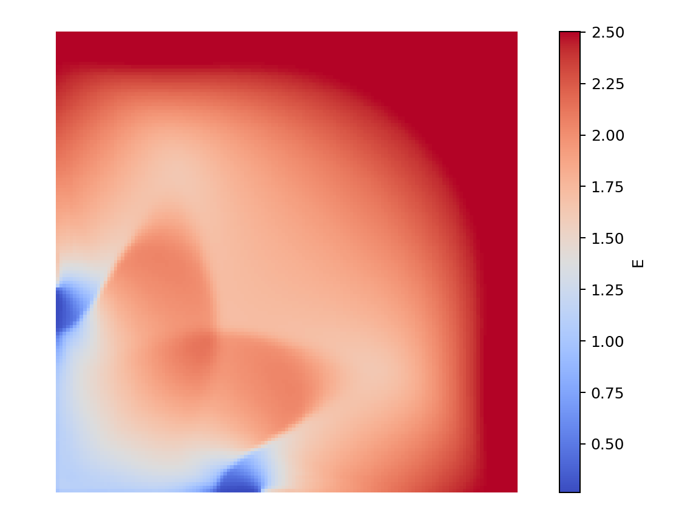

- Generated on Tue Sep 8 2026 00:01:45 for Peano by
 1.10.0
1.10.0
|
Peano
|
This tutorial adds the last big ingredient: a limiter. We solve a 2D Riemann (shock-tube) problem for the compressible Euler equations: a corner of low-density, low-pressure gas sits in a box of dense, high-pressure gas. When the simulation starts, the dense gas rushes into the corner, launching shock waves and contact discontinuities. The notebook is tutorials/04_limiting/EulerShock.ipynb, with its implementation in ADERDGSolver.cpp and Limiter.cpp.
A high-order ADER-DG scheme is accurate where the flow is smooth, but it overshoots and undershoots near discontinuities (Gibbs oscillations). Those oscillations can drive the density or pressure negative and crash the run. The a-posteriori limiter** keeps the scheme both accurate and robust:
2 * order + 1 volumes;We solve the 2D compressible Euler equations for density \(\rho\), momentum \(\rho \mathbf{u}\) and energy \(E\). There is no source term. The conserved variables are addressed through the generated Shortcuts enum (Shortcuts::rho, Shortcuts::j + 0/1, Shortcuts::E), so the same indices work in both implementation files.
The domain is the box \([-1, 1]^2\). The bottom-left quadrant starts with \(\rho = 0.125,\ p = 0.1\) and the rest of the box with \(\rho = 1,\ p = 1\), both at rest. The outer state never changes during the run, so the boundaries are Dirichlet conditions that simply hold that initial outer state.
Limiting is a feature of a discontinuous Galerkin solver rather than a solver of its own. We create the high-order ADERDGSolver and switch its limiter on with add_subcell_limiter. The subcell scheme a troubled cell falls back on evaluates the same flux and eigenvalue as the high-order scheme:
aderdg_solver = exahype2.solvers.aderdg.GlobalAdaptiveTimeStep(
name = "ADERDGSolver", order = 5, ...
)
aderdg_solver.add_subcell_limiter(
limiter_solver = exahype2.solvers.fv.godunov.subcell_scheme(),
number_of_dmp_observables = 4,
dmp_relaxation_parameter = 0.01,
dmp_differences_scaling = 0.03,
dmp_observables = exahype2.solvers.PDETerms.User_Defined_Implementation,
physical_admissibility_criterion = exahype2.solvers.PDETerms.User_Defined_Implementation,
)
A cell is recomputed when either test rejects its candidate. The discrete maximum principle takes the observables written in Limiter.cpp and requires the candidate to stay inside the range the cell itself held one step earlier, widened by the dmp_* parameters. The troubled-cell test rejects any state that is not finite or whose density or pressure is not positive.
ADERDGSolver.cpp holds the Euler equations as a 2D Riemann problem. The subcell scheme a troubled cell falls back on evaluates these same terms. A density floor keeps the reciprocal finite when an oscillation briefly pushes a cell towards the vacuum, and the eigenvalue takes the magnitude of the pressure, so a candidate the limiter is about to reject still yields a finite time step:
Limiter.cpp holds the two callbacks the limiter asks the solver for: the troubled-cell test, and the observables the discrete maximum principle bounds. The solver declares them only while the limiter is configured, so the notebook adds this file to the build only then:
export OMP_NUM_THREADS=4 ./EulerShock -et 2.0 -ns 20 -l 3
We plot the energy from the ADERDGSolver (use the field dropdown to switch to density, momentum or pressure):
from postprocessing import render_solution
render_solution.show_solution("ADERDGSolver", field="E")
Drag the time slider to partway through the run, where the structure is clearest:

The energy at \(t \approx 0.8\): the curved shock front, the contact discontinuities and the central jet of the 2D Riemann problem all stand out. The limiter keeps the solution physical (positive density and pressure) right through these discontinuities, quietly swapping troubled ADER-DG cells for Finite Volume ones.
The limiter also writes a LimiterStatus field beside the solution, so picking it in the dropdown shows which cells ran on the Finite Volume subgrid at each snapshot. Expect a thin band tracking the shocks and the contact.
The limiter is not a cosmetic detail here - the scheme is unusable without it. In the notebook, go back to the solver cell, set
use_limiting = False
and re-run from there. Now only the high-order ADER-DG scheme runs, with no Finite Volume fallback, and it oscillates uncontrollably at the shock fronts. Within the first couple of percent of the run those oscillations drive the density negative, the state then grows without bound, the reported maximum eigenvalue jumps by more than an order of magnitude, and the time step collapses with it.
You do not have to interrupt anything. Once the time step underflows, ExaHyPE trips a noncritical assertion on it, dumps the final state and shuts down within seconds, and the non-zero exit status makes the run cell raise. The dumped snapshot is worth plotting: its densities and energies are many orders of magnitude away from anything physical, and both signs appear where only positive values are meaningful. That is the whole point of a-posteriori limiting: for problems with shocks, a high-order scheme on its own is not robust, and the limiter is what makes it usable.
-l 4 for sharper shocks (slower).dmp_relaxation_parameter and dmp_differences_scaling, and watch how many cells get limited.ShockPosition in ADERDGSolver.cpp).In Part 5 - 3D Elastic Waves and a Taste of HPC you take ExaHyPE 2 to three dimensions - 3D elastic waves - and measure how the solver scales across parallel hardware.